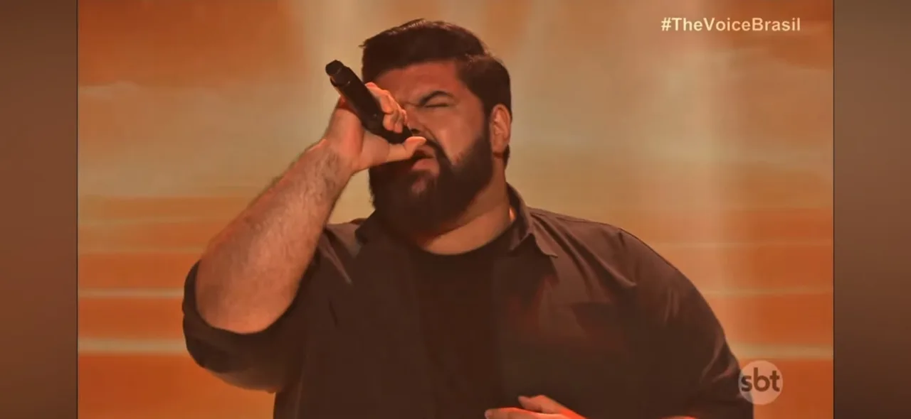
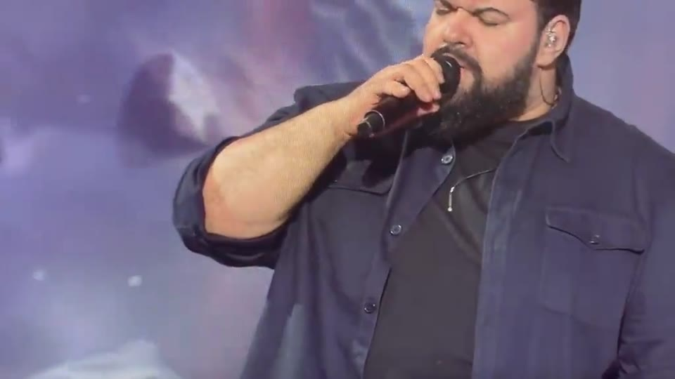

Last Kiss
Amadeu Brutus & Pearl Jam


Agenda da semana · 17 a 22 de novembro
Av. Paulo Faccini, 2003
Av. Engenheiro Luís Carlos Berrini, 443
R. do Rocio, 89
Rua Zacarias de Góis, 1094
Rua Tapajós, 274
Rua Tapajós, 2
Av. São Luiz, 822
Rua Amoipira, 304
Rua Tapajós, 274
Shopping União de Osasco
Agenda sujeita a alterações. Para contratar um show, fale com a produção.
Ouvir
Interpretações gravadas por Amadeu Brutus e a sua música autoral. Aperte o play e ouça direto aqui.
The Voice Brasil 2026 · SBT e Disney+
Nas Audições às Cegas, Amadeu Brutus cantou “Ordinary” e conquistou Diogo Nogueira e Lauana Prado. Escolheu o Time Lauana, levou “Chão de Giz” para as Batalhas e seguiu no Time Paulo Ricardo.
Assista à jornada
Performances e interpretações
Amadeu Brutus & Pearl Jam
Amadeu Brutus & Coldplay
Na imprensa · The Voice Brasil 2026

Audições às Cegas
Cantor interpretou “Ordinary”, conquistou duas cadeiras e escolheu seguir na competição com Lauana Prado.
Ler no The Voice Brasil
As Batalhas
Participantes do Time Lauana encararam um dos grandes sucessos da música brasileira nas Batalhas.
Ler no The Voice BrasilA carreira
Com raízes no pop e rock brasileiro, Amadeu Brutus começou sua trajetória musical em meados dos anos 2000, à frente da banda Visionários S.A. Desde então, a música se tornou parte essencial da sua vida.
Entre apresentações, composições autorais e a experiência como professor de música, construiu uma carreira marcada por talento, esforço e dedicação. Dos botecos e casas de shows de São Paulo aos palcos de grandes produções, abriu shows e dividiu experiências com Titãs, Ana Carolina e Roupa Nova.
Em 2026, chegou ao palco do The Voice Brasil, no Time Lauana Prado e, na sequência, no Time Paulo Ricardo: uma nova etapa diante de um público ainda maior.
A primeira banda, à frente do microfone.
Aberturas de show e experiências divididas.
A música ensinada, não só cantada.
Time Lauana Prado e Time Paulo Ricardo.
E este é apenas o começo de um novo capítulo.
Registros de uma fase anterior da música de Amadeu Brutus. Um resgate sonoro para revisitar outras épocas, outras interpretações e o caminho percorrido até aqui.
Ouvir no SpotifyPara falar com o departamento comercial, preencha o formulário abaixo:
Recebemos o seu contato e já enviamos uma confirmação para . A equipe do Amadeu Brutus responde em breve.
Não encontrou o e-mail? Confira também a caixa de spam.